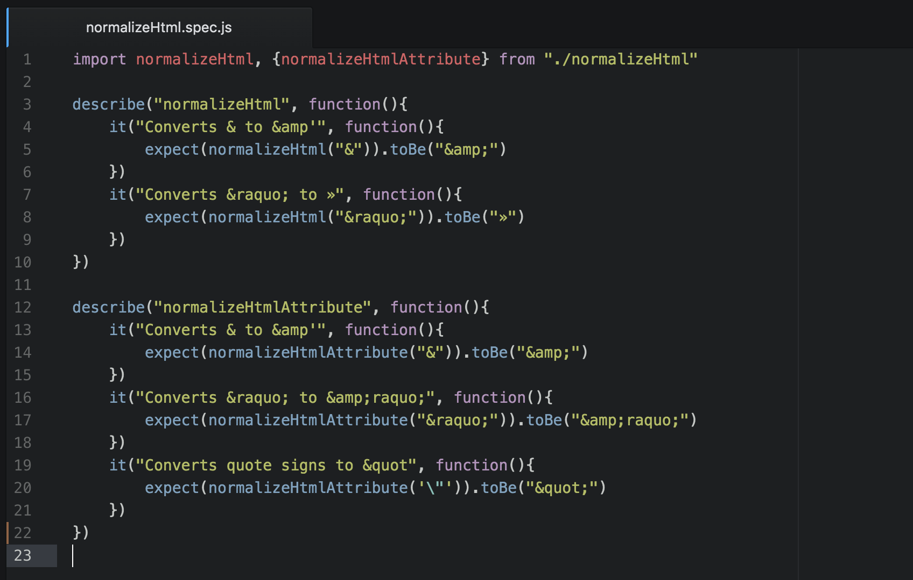

Håll det simpelt
10 sept 2020
Det är lätt att se alla dessa komplicerade webbplatser med galna animationer, element som rör sig
när du
bläddrar och tro att din webbplats behöver det.
Även om det kan vara trevligt, kom ihåg att din design inte är det viktigaste, den presenterar endast
innehållet - du
du vill inte sluta distrahera människor från innehållet med PowerPoint-liknande övergångar som
flyger
runt
överallt.
Är sidan simpel blir det lättare för dig att hålla den uppdaterad så innehållet alltid är färskt.
Källa
Tänk på prestandan

7 sept 2020
En enkel men ofta förbisedd del av att bygga en webbplats är att maximera sidans hastighet. Att ha
en
snabb
webbplats ökar inte bara din sökposition (sidhastighet är en variabel som sökmotorer tittar på),
utan
det
kan
förbättra din besökstatistik. Dina besökare vill inte vänta på ditt innehåll och kommer att lämna om
det
tar
för lång tid att ladda.
Börja med att se till att dina bilder har en lämplig upplösning och komprimera dem för att
ytterligare
minska
deras storlek.
Var också uppmärksam på hur många bilder du har - det spelar ingen roll hur optimerade de är om du
bombarderar din besökare med 600 serverförfrågningar.
Håll dina tredjepartsbibliotek till ett minimum och slå ihop dem alla för att minska antalet
förfrågningar.
Samma sak gäller även typsnitt; försök bara ladda de tjocklekar och stilar du faktiskt behöver.
Källa
ReactJS

4 sept 2020
React gör det smärtfritt att skapa interaktiva användargränssnitt. Designa enkla vyer för varje
tillstånd i
din applikation, och React uppdaterar effektivt och ger precis rätt komponenter när din data ändras.
Deklarativa vyer gör din kod mer förutsägbar och lättare att felsöka.
Komponentbaserad
Bygg inkapslade komponenter som hanterar sitt eget tillstånd och sedan komponera dem för att skapa
komplexa
användargränssnitt.
Eftersom komponentlogik är skriven i JavaScript istället för mallar kan du enkelt skicka rik data
genom
din
app och hålla tillståndet utanför DOM.
Lär dig en gång, skriv var som helst
Vi gör inte antaganden om resten av din teknikstack, så du kan utveckla nya funktioner i React utan
att
skriva om befintlig kod.
React kan också renderas på servern med Node och driva mobilappar med React Native.
Källa